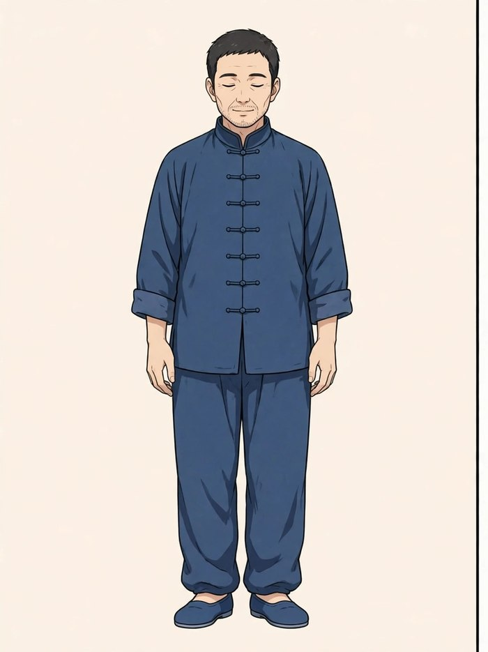
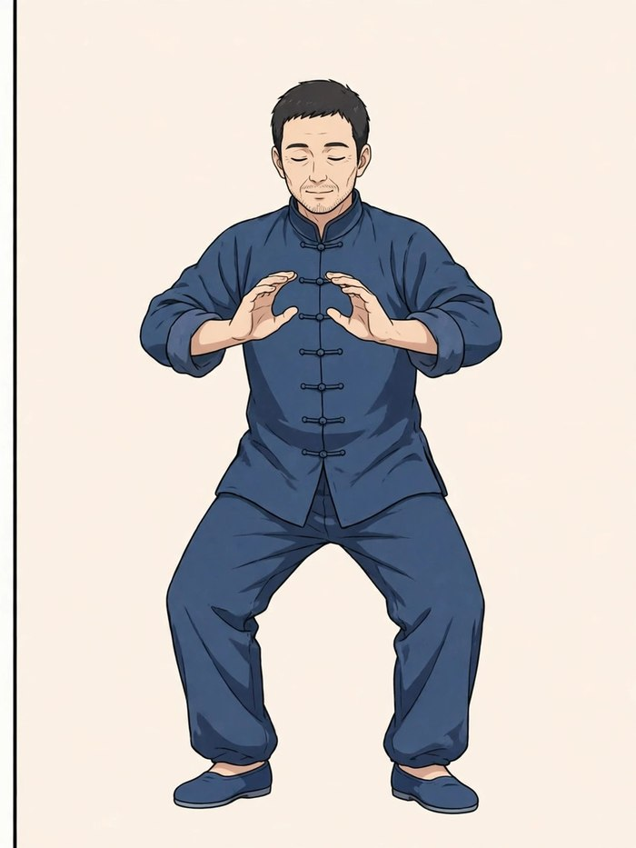

站樁 ― 立つ瞑想の図解
站樁（たんとう／ジャンジュアン）は、立ったまま静止する功法です。「樁」は杭のことで、大地に杭のように立つという意味です。動かない分、姿勢・呼吸・意識の三つだけが残り、その精度がそのまま鍛錬になります。太極拳や形意拳、そして意拳（大成拳）では、站樁がすべての土台と位置づけられてきました。北辰会の代表・抱元も、意拳の系譜でこの実践を受け継いでいます（道号「抱元」は、この樁の姿勢――元を抱く――に由来します）。
基本の立ち方（無極樁）

足を肩幅に開いて立ち、腕は自然に下ろします。何もしないように見えて、実は全身の力みの抜き方を学ぶ姿勢です。まず「立つこと自体」を整える入口として、多くの流派で最初に置かれます。
渾元樁（抱球・抱元）

両腕を胸の前で丸く構え、大きな球を抱くようにします。意拳の代表的な樁で、腕と背中と脚が一つの張力でつながる感覚を養います。腕は自分の力で持ち上げるのではなく、「球に腕を預ける」イメージが伝統的な要領です。
姿勢の要点
| 部位 | 要点 |
|---|---|
| 足 | 肩幅に開き、体重は足裏全体に均等に。湧泉（足裏のくぼみ）を意識する |
| 膝 | 伸ばしきらず、わずかに緩める。膝がつま先より前に出ない |
| 腰・骨盤 | 腰を反らさず、尾骨を軽く下に収める感覚。命門（腰の後ろ）が開くイメージ |
| 背中・肩 | 背筋は伸ばし、肩は力を抜いて落とす（沈肩）。胸は張らず、含むように |
| 頭 | 頭頂が糸で吊られているように（虚霊頂勁）。顎は軽く引く |
| 目・呼吸 | 目は半眼か軽く閉じる。呼吸は自然で、細く長く |
| 意識 | 下腹部（丹田）に静かに置く。雑念は追わず、戻す |
時間の目安と増やし方
最初は5分から始め、週ごとに数分ずつ伸ばして、20〜30分を一つの目安にします。長さよりも「正しい姿勢で、毎日立つ」ことが大切です。脚が震える、肩が張るのは、力みの抜き方を身体が学んでいる過程で起こりますが、痛みが出たら中止します。
注意
- 膝に痛みのある方は、膝の緩めを浅くし、時間を短くしてください。
- めまいやふらつきを感じたら、すぐに座って休んでください。必ず壁や椅子の近くで始めます。
- 高血圧の方は長時間の実践を避け、主治医に相談してください。
関連：功法ガイド／八段錦／経絡論（督脈・任脈）
このページは、中医学の伝統的な考え方を紹介する情報提供です。診断や治療の案内ではありません。症状のある方は、医療機関での診察を土台にしてください。